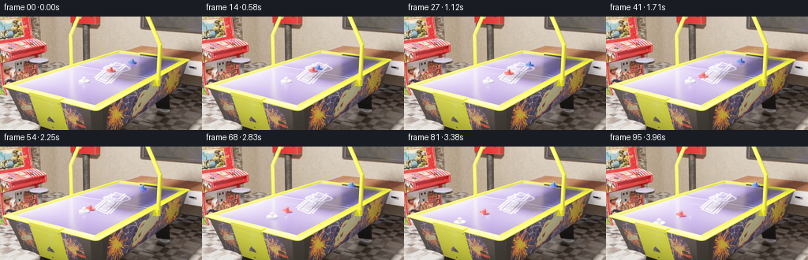

CODING AGENTS AS PIXEL WORLD MODELS
traex/GPT-6-Astra · pcve_0000
点击播放 · 原生 RGB 像素
编辑前的完整原视频
上方为编辑结果；原视频是模型获准使用的输入。下方为逐轮保存的编辑候选。
逐轮保存的候选
回放视频、检查图与代码变化。
每份候选均可单独播放。实际图片检查记录在下方工具轨迹中。
候选 01播放与检查图
点击播放 · 原生 RGB 像素

展开代码变化
--- 上一保存版本
+++ 本次保存版本
@@ -0,0 +1,286 @@
+"""Mass-only counterfactual, reconstructed from the supplied RGB timeline.
+
+No size/color substitution is used for mass. The original equal-mass velocity
+exchange is replaced by the one-dimensional impulse solution for masses 1:4:1.
+Source pixels supply every object, the environment, shading and surface detail.
+"""
+from pathlib import Path
+import warnings
+import cv2
+import numpy as np
+from scipy import ndimage as ndi
+from PIL import Image
+import artifact_io
+
+ROOT = Path(__file__).resolve().parent
+S = 5
+X0, Y0, X1, Y1 = 54, 44, 199, 105
+H, W = (Y1-Y0)*S, (X1-X0)*S
+
+
+def largest_seed_region(candidate, seed):
+ grown = ndi.binary_propagation(seed, mask=candidate | seed)
+ grown = ndi.binary_closing(grown, iterations=2)
+ return ndi.binary_fill_holes(grown)
+
+
+def object_mask(im, kind, t):
+ r, g, b = im.astype(np.float32).transpose(2, 0, 1)
+ yy, xx = np.indices(r.shape)
+ x, y = xx/S+X0, yy/S+Y0
+ if kind == 'red':
+ limit = (x > 102) & (x < 151) & (y > 61) & (y < 86)
+ seed = limit & (r-g > 55) & (r-b > 45)
+ candidate = limit & (r-g > 18) & (r-b > 6)
+ elif kind == 'blue':
+ limit = (x > 136) & (x < 177) & (y > 49) & (y < 73)
+ seed = limit & (g-r > 12) & (b-r > 55) & (b-g > 25)
+ candidate = limit & (g-r > -2) & (b-r > 28) & (b-g > 15)
+ else:
+ # The white body is distinct from the lavender surface in chroma.
+ # Restrict to its tracked trajectory to exclude white court markings.
+ if t <= 29:
+ cx, cy = 106.0, 81.0
+ elif t < 49:
+ dt = t-29.65
+ cx = 106.0 - 1.79*dt/(1-.006*dt)
+ cy = 81.0 + (106.0-cx)*.395
+ else:
+ cx, cy = 67.5, 95.8
+ limit = (x > cx-8.7) & (x < cx+8.3) & (y > cy-5.8) & (y < cy+5.2)
+ seed = limit & (r > 235) & (g > 231) & (b > 222) & (abs(r-g) < 12) & (abs(b-r) < 13)
+ candidate = limit & (g-r > -17) & (b-r < 21) & (b-g < 27) & (r > 170)
+ # Color boundaries are measured at the native resolution, not enlarged
+ # low-resolution masks, retaining subpixel silhouette and bevel detail.
+ lab, n = ndi.label(seed)
+ if n:
+ sizes = np.bincount(lab.ravel()); sizes[0] = 0
+ keep = np.flatnonzero(sizes > max(18, sizes.max()*.055))
+ seed = np.isin(lab, keep)
+ m = largest_seed_region(candidate, seed)
+ # Limit weak chroma propagation to the neighborhood of a strong core.
+ m &= ndi.distance_transform_edt(~seed) < 8
+ m = ndi.binary_fill_holes(ndi.binary_closing(m, iterations=2))
+ return m
+
+
+def load_source():
+ cap = cv2.VideoCapture(str(ROOT/'source_video.mp4'))
+ crops = []
+ full0 = None
+ for t in range(55):
+ ok, bgr = cap.read()
+ if not ok:
+ raise RuntimeError('Incomplete source video')
+ rgb = cv2.cvtColor(bgr, cv2.COLOR_BGR2RGB)
+ if t == 0:
+ full0 = rgb.copy()
+ crops.append(rgb[Y0*S:Y1*S, X0*S:X1*S].copy())
+ cap.release()
+ return full0, np.asarray(crops)
+
+
+def reconstruct_background(crops, masks):
+ # Recover pixels from times at which the bodies have vacated them.
+ # Use multiple times so both sides of the first impact are available.
+ indices = [0, 5, 10, 14, 18, 21, 24, 27, 31, 35, 40, 45, 50, 54]
+ values = []
+ for t in indices:
+ m = np.zeros((H, W), bool)
+ for kind in ('red', 'blue', 'white'):
+ core = masks[kind][t]
+ # Include the contact shadow in the invalid observations.
+ exclusion = ndi.binary_dilation(core, iterations=6)
+ for sy in [4, 8, 12]:
+ exclusion[sy:, 3:] |= core[:-sy, :-3]
+ m |= exclusion
+ arr = crops[t].astype(np.float32)
+ arr[m] = np.nan
+ values.append(arr)
+ with warnings.catch_warnings():
+ warnings.simplefilter('ignore', RuntimeWarning)
+ bg = np.nanmedian(np.stack(values), axis=0)
+ unknown = ~np.isfinite(bg[..., 0])
+ bg[unknown] = 0
+ # Small never-visible intersections of the bodies contain no recoverable
+ # source pixels. Fill only those holes with local deterministic diffusion.
+ bg = cv2.inpaint(np.clip(bg, 0, 255).astype(np.uint8), unknown.astype(np.uint8)*255,
+ 12, cv2.INPAINT_TELEA).astype(np.float32)
+ print('Background unobserved area, output-pixel equivalents:', round(unknown.sum()/25, 2))
+ return bg
+
+
+def make_sprite(crops, masks, bg, kind, t):
+ image = crops[t].astype(np.float32)
+ mask = masks[kind][t]
+ yy, xx = np.where(mask)
+ center = np.array([xx.mean(), yy.mean()], np.float32)
+ # Native antialiasing and a fraction of a display pixel of feathering.
+ solid = ndi.binary_dilation(mask, iterations=1)
+ alpha = ndi.gaussian_filter(solid.astype(np.float32), .65)
+ others = np.zeros((H, W), bool)
+ for other in ('red', 'blue', 'white'):
+ if other != kind:
+ others |= ndi.binary_dilation(masks[other][t], iterations=3)
+ # Cast/contact shadows are difference layers rather than pieces of the
+ # printed floor, so translated sprites do not transport court markings.
+ near = ndi.distance_transform_edt(~mask) < 15
+ diff = image-bg
+ shade = near & ~solid & ~others & (diff.mean(2) < -3.5)
+ sh_alpha = ndi.gaussian_filter(shade.astype(np.float32), .8)
+ sh_alpha *= (1-alpha)
+ shadow = np.clip(diff, -45, 10)*sh_alpha[..., None]
+ support = (alpha > .005) | (np.abs(shadow).max(2) > .5)
+ ys, xs = np.where(support)
+ x0, x1 = max(0, xs.min()-3), min(W, xs.max()+4)
+ y0, y1 = max(0, ys.min()-3), min(H, ys.max()+4)
+ return dict(rgb=image[y0:y1, x0:x1], alpha=alpha[y0:y1, x0:x1],
+ shadow=shadow[y0:y1, x0:x1], center=center,
+ anchor=center-np.array([x0, y0]), box=(x0, y0, x1, y1))
+
+
+def source_center(sprites, kind, phase):
+ p = float(np.clip(phase, 0, 54))
+ a = int(np.floor(p)); b = min(a+1, 54)
+ return (1-(p-a))*sprites[kind][a]['center'] + (p-a)*sprites[kind][b]['center']
+
+
+def place_layer(canvas, sprite, center, scale, part):
+ data = sprite[part]
+ if part == 'rgb':
+ data = data*sprite['alpha'][..., None]
+ anchor = sprite['anchor']
+ left_top = center-anchor*scale
+ h, w = data.shape[:2]
+ x0 = int(np.floor(left_top[0]))-2; y0 = int(np.floor(left_top[1]))-2
+ x1 = int(np.ceil(left_top[0]+w*scale))+2
+ y1 = int(np.ceil(left_top[1]+h*scale))+2
+ cx0, cy0, cx1, cy1 = max(x0, 0), max(y0, 0), min(x1, W), min(y1, H)
+ if cx1 <= cx0 or cy1 <= cy0:
+ return
+ mat = np.array([[scale, 0, left_top[0]-cx0],
+ [0, scale, left_top[1]-cy0]], np.float32)
+ dsize = (cx1-cx0, cy1-cy0)
+ warped = cv2.warpAffine(data, mat, dsize, flags=cv2.INTER_LINEAR,
+ borderMode=cv2.BORDER_CONSTANT)
+ target = canvas[cy0:cy1, cx0:cx1]
+ if part == 'shadow':
+ target += warped
+ else:
+ alpha = cv2.warpAffine(sprite['alpha'], mat, dsize, flags=cv2.INTER_LINEAR,
+ borderMode=cv2.BORDER_CONSTANT)
+ target *= 1-alpha[..., None]
+ target += warped
+
+
+def generate():
+ full0, crops = load_source()
+ factual = np.load(ROOT/'source_pixels.npz')['rgb']
+ masks = {kind: [object_mask(im, kind, t) for t, im in enumerate(crops)]
+ for kind in ('red', 'blue', 'white')}
+ for kind in masks:
+ print(kind, 'native mask areas at 0,14,30,49:',
+ [int(masks[kind][t].sum()) for t in [0,14,30,49]])
+ bg = reconstruct_background(crops, masks)
+ sprites = {kind: [make_sprite(crops, masks, bg, kind, t) for t in range(55)]
+ for kind in masks}
+
+ # Keep the original background everywhere except the initial bodies and
+ # their shadows. This leaves the room, rails and floor detail unchanged.
+ cleanup = np.zeros((H, W), np.float32)
+ for kind in masks:
+ m = ndi.binary_dilation(masks[kind][0], iterations=7)
+ for sy in [4,8,12,16]:
+ m[sy:, 3:] |= masks[kind][0][:-sy, :-3]
+ cleanup = np.maximum(cleanup, ndi.gaussian_filter(m.astype(np.float32), 1.0))
+ clean = crops[0].astype(np.float32)*(1-cleanup[...,None])+bg*cleanup[...,None]
+
+ # Elastic impact law, with the red body's mass multiplied by four.
+ # A moving equal-mass striker used to hand off its velocity and stop.
+ m_blue, m_red, m_white = 1., 4., 1.
+ red_rate = 2*m_blue/(m_blue+m_red) # 0.4
+ blue_recoil = (m_red-m_blue)/(m_blue+m_red) # 0.6
+ white_rate = red_rate*2*m_red/(m_red+m_white) # 0.64
+ red_after = red_rate*(m_red-m_white)/(m_red+m_white) # 0.24
+ impact1 = 14.
+ red_source_impact2 = 30.
+ impact2 = impact1+(red_source_impact2-impact1)/red_rate
+ print('Counterfactual impacts at frames:', impact1, impact2)
+
+ output = []
+ diagnostics = []
+ for t in range(96):
+ if t <= impact1:
+ output.append(factual[t].copy())
+ continue
+ poses = []
+ # Blue reverses along its inbound line. Use the actual source poses
+ # while retracing; use a perspective continuation only past frame 0.
+ blue_p = impact1-blue_recoil*(t-impact1)
+ if blue_p >= 0:
+ blue_c = source_center(sprites, 'blue', blue_p)
+ blue_i = int(np.clip(round(blue_p), 0, 14))
+ blue_scale = 1.
+ else:
+ dt = -blue_p
+ dx = 1.35*dt/(1+.0044*dt)
+ # Stop at the rear rail, as the source's white body does at its rail.
+ dx = min(dx, 22.0)
+ blue_c = sprites['blue'][0]['center'] + S*np.array([dx, -.395*dx])
+ blue_i = 0
+ blue_scale = 1-.00315*dx
+ poses.append(('blue', blue_i, blue_c, blue_scale))
+
+ red_p = impact1+red_rate*(t-impact1)
+ if t <= impact2:
+ red_c = source_center(sprites, 'red', red_p)
+ red_i = int(np.clip(round(red_p), 14, 30))
+ red_scale = 1.
+ else:
+ dt = red_after*(t-impact2)
+ dx = -1.86*dt/(1-.0048*dt)
+ # The now-heavier mallet retains forward momentum after impact 2.
+ red_c = sprites['red'][30]['center'] + S*np.array([dx, -.395*dx])
+ red_i = 30
+ red_scale = 1/(1-.0048*dt)
+ poses.append(('red', red_i, red_c, red_scale))
+
+ if t <= impact2:
+ white_i = 0
+ white_c = sprites['white'][0]['center'].copy()
+ else:
+ white_p = min(49., 29.65+white_rate*(t-impact2))
+ white_i = int(np.clip(round(white_p), 30, 49))
+ white_c = source_center(sprites, 'white', white_p)
+ poses.append(('white', white_i, white_c, 1.))
+
+ canvas = clean.copy()
+ for kind, index, center, scale in poses:
+ place_layer(canvas, sprites[kind][index], center, scale, 'shadow')
+ for kind, index, center, scale in poses:
+ place_layer(canvas, sprites[kind][index], center, scale, 'rgb')
+ hi = full0.copy()
+ hi[Y0*S:Y1*S, X0*S:X1*S] = np.clip(np.round(canvas),0,255).astype(np.uint8)
+ lo = np.asarray(Image.fromarray(hi).resize((256,144), Image.Resampling.LANCZOS))
+ output.append(lo)
+ if t in [15,24,38,54,68,84,95]:
+ diagnostics.append((t, [(k, np.round(c/S+[X0,Y0],2).tolist())
+ for k,i,c,s in poses]))
+ frames = np.asarray(output, dtype=np.uint8)
+ assert frames.shape == (96,144,256,3)
+ artifact_io.save(frames, ROOT)
+ # Provide a conventional video as well as the exact RGB artifact/player.
+ writer = cv2.VideoWriter(str(ROOT/'edited_video.mp4'), cv2.VideoWriter_fourcc(*'mp4v'),
+ 24, (256,144))
+ if not writer.isOpened():
+ raise RuntimeError('Video encoder unavailable')
+ for frame in frames:
+ writer.write(cv2.cvtColor(frame, cv2.COLOR_RGB2BGR))
+ writer.release()
+ for item in diagnostics:
+ print('Object centers:', item)
+ print('Saved all 96 RGB frames, index.html, pixels.npz and edited_video.mp4')
+
+
+if __name__ == '__main__':
+ generate()
可观测工具轨迹
实际执行的命令与返回图片。
命令 1exit 0
/bin/bash -lc "ls -la && cat prompt.txt && printf '\\n--- GENERATION RULES ---\\n' && cat GENERATION_RULES.md"
命令 2exit 0
/bin/bash -lc "cat source_info.json && cat task_spec.json && sed -n '1,260p' artifact_io.py"
命令 3exit 0
/bin/bash -lc "python - <<'PY'
import numpy as np
from collections import Counter
z=np.load('source_pixels.npz'); print(z.files)
a=z[z.files[0]]; print(a.shape,a.dtype)
for t in [0,12,24,36,48,60,72,84,95]:
im=a[t]; r,g,b=im.astype(float).transpose(2,0,1)
masks={'red':(r>g*1.4)&(r>b*1.4)&(r>70),'blue':(b>r*1.4)&(b>g*1.15)&(b>60),'green':(g>r*1.3)&(g>b*1.1)&(g>50),'yellow':(r>100)&(g>70)&(b<g*.6)}
print('Frame',t)
for name,m in masks.items():
y,x=np.where(m); print(name,len(x),(x.min(),y.min(),x.max(),y.max()) if len(x) else '',np.round([x.mean(),y.mean()],2) if len(x) else '')
print('quantized colors frame0',Counter(map(tuple,(a[0]//16*16).reshape(-1,3))).most_common(30))
PY"命令 4exit 0
/bin/bash -lc "python - <<'PY'
import numpy as np
from scipy import ndimage as nd
A=np.load('source_pixels.npz')['rgb'].astype(float)
D=np.max(np.abs(A-A[0]),axis=(0,3)); m=D>30
l,n=nd.label(m)
print('motion components')
for s in nd.find_objects(l):
if s is not None:
area=m[s].sum()
if area>8: print(s,area)
for t in [0,3,6,9,12,16,20,24,36,60,95]:
a=A[t]; r,g,b=a.transpose(2,0,1); m=(r>120)&(r>g*1.6)&(r>b*1.5)
l,n=nd.label(m)
print('RED FRAME',t)
for i,s in enumerate(nd.find_objects(l)):
z=l[s]==i+1; area=z.sum()
if area>12:
y,x=np.where(l==i+1); print(area, (x.min(),y.min(),x.max(),y.max()),np.round([x.mean(),y.mean()],2))
print('most variable blocks')
v=A.std(0).mean(2)
for y in range(0,144,8):
print(y, ' '.join(f'{v[y:y+8,x:x+8].mean():4.0f}' for x in range(0,256,8)))
PY"命令 5exit 0
/bin/bash -lc "python - <<'PY'
import numpy as np
from scipy import ndimage as nd
A=np.load('source_pixels.npz')['rgb'].astype(float)
for t in range(0,96):
d=np.max(abs(A[t]-A[max(t-1,0)]),2); m=d>20; l,n=nd.label(nd.binary_dilation(m,iterations=1))
parts=[]
for s in nd.find_objects(l):
area=m[s].sum()
if area>5:
y,x=s; parts.append((area,(x.start,y.start,x.stop,y.stop)))
if parts: print(t,parts)
print('ROI colors')
for t in [0,12,16,24,32,48,95]:
im=A[t]; print('frame',t)
for y in range(50,101,2):
line=''
for x in range(58,179,2):
r,g,b=im[y:y+2,x:x+2].mean((0,1))
if r>g*1.5 and r>b*1.5 and r>100: c='R'
elif b>r*1.2 and b>g*1.1: c='B'
elif r>g*1.25 and g>b*1.25: c='O'
elif r>140 and g>120 and b<g*.65: c='Y'
elif max(r,g,b)<50: c='#'
elif max(r,g,b)<90:c='x'
elif max(r,g,b)<130:c='-'
elif max(r,g,b)<180:c='.'
elif min(r,g,b)>190:c=' '
else:c=':'
line+=c
print(y,line)
PY"命令 6exit 0
/bin/bash -lc "python - <<'PY'
import numpy as np
from scipy import ndimage as nd
A=np.load('source_pixels.npz')['rgb'].astype(float)
for t in range(0,60):
im=A[t];r,g,b=im.transpose(2,0,1); y,x=np.indices(r.shape)
print(t,end=' ')
for name,m in [('red',(r>120)&(r>g*1.6)&(r>b*1.5)&(x>90)&(x<155)&(y>58)&(y<88)),('blue',(b>r*1.4)&(b>g*1.2)&(x>125)&(x<175)&(y>48)&(y<74))]:
yy,xx=np.where(m); print(name,len(xx),np.round([xx.mean(),yy.mean()],3),end='; ')
print()
print('\\nObject ROI initial, full pixels; W:white R:red B:blue m:magenta C:cyan y:yellow O:orange .:beige -:gray')
for t,box in [(0,(126,49,177,77)),(29,(96,69,134,90)),(40,(70,78,116,101))]:
x0,y0,x1,y1=box; print('t=',t,'box=',box)
print(' '+''.join(str(x//10%10) for x in range(x0,x1)))
print(' '+''.join(str(x%10) for x in range(x0,x1)))
for y in range(y0,y1):
line=''
for x in range(x0,x1):
r,g,b=A[t,y,x]; mn=min(r,g,b);mx=max(r,g,b)
if r>g*1.5 and r>b*1.5 and r>100:c='R'
elif b>r*1.25 and b>g*1.15:c='B'
elif r>g*1.10 and b>g*1.10:c='m'
elif g>r*1.1 and b>r*1.1:c='C'
elif r>g*1.25 and g>b*1.25:c='O'
elif r>140 and g>120 and b<g*.65:c='y'
elif mn>240:c='W'
elif mn>220:c='w'
elif mn>200:c=' '
elif mn>180:c='.'
elif mn>150:c=','
elif mn>100:c='-'
elif mn>60:c='x'
else:c='#'
line+=c
print(f'{y:3d}'+line)
PY"命令 7exit 0
/bin/bash -lc "python - <<'PY'
import numpy as np
from scipy import ndimage as nd
A=np.load('source_pixels.npz')['rgb'].astype(float)
for t in [0,14,20,30,40,49]:
print('\\nframe',t)
# List RGB range on moving objects by differential against clean background
ref=A[60] if t<30 else A[0]
d=np.max(abs(A[t]-ref),2)
for name,box in [('blue',(155,50,176,66)),('red',(128,59,154,77)),('white',(95,73,115,90)),('front',(60,83,94,102))]:
if t not in [0,30,49]:continue
x0,y0,x1,y1=box
ys,xs=np.where(d[y0:y1,x0:x1]>25); xs+=x0; ys+=y0
cols=A[t,ys,xs];
if len(xs):print(name,'diff',len(xs),'mean',cols.mean(0),'range',cols.min(0),cols.max(0))
if t in [0,30,49]:
for y in range(49,103):
s=''
for x in range(58,177):
dif=d[y,x]; r,g,b=A[t,y,x]
if dif<12:c=' '
elif dif<25:c='.'
elif r>g*1.4 and r>b*1.4:c='R'
elif b>r*1.3 and b>g*1.1:c='B'
elif r>230 and g>225 and b>220:c='W'
elif min(r,g,b)>190:c='o'
elif min(r,g,b)>150:c='-'
elif min(r,g,b)>100:c='x'
else:c='#'
s+=c
if s.strip(): print(y,s.rstrip())
PY"命令 8exit 0
/bin/bash -lc "python - <<'PY'
import numpy as np
from scipy import ndimage as nd
A=np.load('source_pixels.npz')['rgb'].astype(float)
for t in range(0,56):
# moving non-red white in lower left: delta from initial
im=A[t]; d=np.max(abs(im-A[0]),2); yy,xx=np.indices(d.shape)
# white source object appears on lavender floor (r/g/b positive changes)
m=(im[...,0]-A[0,...,0]>18)&(im[...,1]-A[0,...,1]>20)&(im[...,2]-A[0,...,2]>-8)&(xx<114)&(yy>76)&(yy<103)
y,x=np.where(m)
if len(x): print(t,len(x),np.round([x.mean(),y.mean()],3),[x.min(),y.min(),x.max(),y.max()])
PY"命令 9exit 0
/bin/bash -lc "python - <<'PY'
import cv2, numpy as np
cap=cv2.VideoCapture('source_video.mp4'); ok,f=cap.read();print(ok,f.shape)
a=np.load('source_pixels.npz')['rgb']; f=cv2.cvtColor(f,cv2.COLOR_BGR2RGB)
for method in [cv2.INTER_AREA,cv2.INTER_LINEAR,cv2.INTER_CUBIC]:
s=cv2.resize(f,(256,144),interpolation=method);print(method,np.abs(s.astype(float)-a[0]).mean(),np.abs(s.astype(float)-a[0]).max())
print('floor RGB values frame0/frame95')
for y in range(52,101,3):
print(y,[(x,a[0,y,x].tolist(),a[95,y,x].tolist()) for x in range(65,180,10)])
PY"命令 10exit 0
/bin/bash -lc "python - <<'PY'
import numpy as np
from scipy.ndimage import label,find_objects
A=np.load('source_pixels.npz')['rgb'].astype(float)
for t in [0,14,15,16,20,25,29,30,35,40,45,49]:
im=A[t]; print('FRAME',t)
for y in range(55,106):
# print only motion regions segmentation (delta vs bg possible red colored + blue + white)
if t not in [0,49]:continue
s=''
for x in range(57,175):
r,g,b=im[y,x];
if r>g*1.5 and r>b*1.5:c='R'
elif b>r*1.4 and b>g*1.2:c='B'
elif min(r,g,b)>239 and max(r,g,b)-min(r,g,b)<12: c='W'
else:c=' '
s+=c
if s.strip(): print(y,s.rstrip())
PY"命令 11exit 0
/bin/bash -lc "python - <<'PY'
import cv2,numpy as np
from scipy import ndimage as nd
cap=cv2.VideoCapture('source_video.mp4')
for t in range(50):
ok,f=cap.read()
if t not in [0,14,15,16,20,24,28,30,40,48,49]:continue
a=cv2.cvtColor(f,cv2.COLOR_BGR2RGB).astype(float);r,g,b=a.transpose(2,0,1); y,x=np.indices(r.shape)
for n,m in [('R',(r>g*1.6)&(r>b*1.5)&(x>500)&(x<770)&(y>290)&(y<430)),('B',(b>r*1.4)&(b>g*1.2)&(x>620)&(x<880)&(y>240)&(y<360))]:
ys,xs=np.where(m)
print(t,n,len(xs),'center',np.round([xs.mean()/5,ys.mean()/5],3),'bbox',np.round([xs.min()/5,ys.min()/5,xs.max()/5,ys.max()/5],1))
PY"命令 12exit 0
/bin/bash -lc "python - <<'PY'
import numpy as np
from scipy import ndimage as nd
A=np.load('source_pixels.npz')['rgb'];r,g,b=A[0].astype(float).transpose(2,0,1)
print('Purple surface spans per row')
for y in range(15,112,3):
m=(r[y]>g[y]*1.03)&(b[y]>r[y]*1.03)&(b[y]>g[y]*1.12)&(r[y]>180)
lab,n=nd.label(nd.binary_closing(m,iterations=3));print(y,[(s[0].start,s[0].stop) for s in nd.find_objects(lab) if s[0].stop-s[0].start>4])
print('along blue possible reverse path')
for x in range(148,245,4):
y=round(65.4-(x-148)*.381)
print(x,y,A[0,y,x].tolist(),A[0,y+6,x].tolist())
PY"命令 13exit 0
/bin/bash -lc "python - <<'PY'
import numpy as np,cv2
from scipy.ndimage import label,find_objects
cap=cv2.VideoCapture('source_video.mp4'); arr={}
for t in range(50):
ok,f=cap.read()
if t in [0,7,14,15,16,20,24,26,28,30,31,35,40,45,48,49]:arr[t]=cv2.cvtColor(f,cv2.COLOR_BGR2RGB)
for t in arr:
a=arr[t].astype(float); yy,xx=np.indices(a.shape[:2]);r,g,b=a.transpose(2,0,1)
# expected white x range
xc=106.5 if t<=30 else 106.5-2.06*(t-30)
m=(r>230)&(g>228)&(b>220)&(abs(r-g)<12)&(abs(g-b)<14)&(xx/5>xc-10)&(xx/5<xc+9)&(yy/5>76+(106.5-xc)*.37)&(yy/5<85+(106.5-xc)*.37)
lab,n=label(m); parts=[]
for i,s in enumerate(find_objects(lab)):
area=(lab[s]==i+1).sum()
if area>20: parts.append((area,i+1))
if parts:
m=np.isin(lab,[i for area,i in parts if area>100]);y,x=np.where(m);print(t,'white',len(x),np.round([x.mean()/5,y.mean()/5],3),np.round([x.min()/5,y.min()/5,x.max()/5,y.max()/5],1))
print('frame0 red sprite expanded diff from f24')
a=arr[0].astype(float);b=arr[24].astype(float)
for y in range(300,370,5):
print(y/5,[(x/5,np.round(a[y:y+5,x:x+5].mean((0,1)),1).tolist(),np.round((a-b)[y:y+5,x:x+5].mean((0,1)),1).tolist()) for x in range(660,765,15)])
PY"命令 14exit 0
/bin/bash -lc "python - <<'PY'
import cv2,numpy as np
from scipy.optimize import least_squares
cap=cv2.VideoCapture('source_video.mp4'); a=[]
for t in range(50):
ok,f=cap.read();im=cv2.cvtColor(f,cv2.COLOR_BGR2RGB)
if t==0:f0=im.copy()
a.append(im)
# template registration red blue in full res with scale optimize
A=np.asarray(a)
from scipy.ndimage import map_coordinates
for name,box,ts in [('B',(161,52,174,64),range(0,15)),('R',(133,63,148,73),range(0,31))]:
x0,y0,x1,y1=np.array(box)*5;templ=A[0,y0:y1,x0:x1].astype(float)
c=templ.transpose(2,0,1); mask=(c[2]>c[0]*1.3)&(c[2]>c[1]*1.15) if name=='B' else (c[0]>c[1]*1.4)&(c[0]>c[2]*1.3)
yy,xx=np.where(mask);yy=yy+y0;xx=xx+x0;cx=xx.mean();cy=yy.mean();target=A[0,yy,xx].astype(float)
p=np.array([0,0,1.]);xs=[]
for t in ts:
if name=='R' and t<14:continue
im=A[t].astype(float)
def res(p):
dx,dy,s=p
q=np.vstack(((yy-cy)*s+cy+dy,(xx-cx)*s+cx+dx))
vals=np.stack([map_coordinates(im[...,c],q,order=1) for c in range(3)],1)
return ((vals-target)*[1,1,1]).ravel()
if len(xs): p[0]-=7;p[1]+=2.5
r=least_squares(res,p,max_nfev=40,diff_step=.001,loss='soft_l1',f_scale=15)
p=r.x;xs.append((t,(cx+p[0])/5,(cy+p[1])/5,p[2],np.abs(res(p)).mean()))
print(name,np.array(xs).round(3).tolist())
# projective x frame fit
z=np.array(xs);good=(z[:,0]>15)&(z[:,0]<27) if name=='R' else z[:,0]>=0
ts=z[good,0];xx=z[good,1]
def fun(p):
x,v,c=p;return x+v*(ts-ts[0])/(1-c*(ts-ts[0]))-xx
fit=least_squares(fun,[xx[0],-1.5,.004]);print('fit',fit.x,'vanish',fit.x[0]+fit.x[1]/fit.x[2], 'errors',fun(fit.x).round(3))
PY"命令 15exit 0
/bin/bash -lc "python - <<'PY'
import numpy as np
from scipy.ndimage import label,find_objects
A=np.load('source_pixels.npz')['rgb'][0].astype(float);r,g,b=A.transpose(2,0,1)
for y in range(30,117,2):
m=(r[y]>175)&(g[y]>165)&(b[y]<g[y]*.8)&(b[y]<r[y]*.8)
l,n=label(m); seg=[]
for s in find_objects(l):
a,z=s[0].start,s[0].stop
if z-a>2:seg.append((a,z))
print(y,seg)
PY"命令 16exit 0
/bin/bash -lc "python - <<'PY'
from PIL import Image
import cv2,numpy as np
cap=cv2.VideoCapture('source_video.mp4');_,im=cap.read();im=cv2.cvtColor(im,cv2.COLOR_BGR2RGB);a=np.load('source_pixels.npz')['rgb'][0]
for m in [Image.Resampling.BILINEAR,Image.Resampling.BICUBIC,Image.Resampling.LANCZOS,Image.Resampling.BOX]:
b=np.array(Image.fromarray(im).resize((256,144),m));print(m,abs(a.astype(float)-b).mean(),abs(a.astype(float)-b).max())
PY"命令 17exit 0
/bin/bash -lc "cat > generate.py <<'PY'
\"\"\"Mass-only counterfactual, reconstructed from the supplied RGB timeline.
No size/color substitution is used for mass. The original equal-mass velocity
exchange is replaced by the one-dimensional impulse solution for masses 1:4:1.
Source pixels supply every object, the environment, shading and surface detail.
\"\"\"
from pathlib import Path
import warnings
import cv2
import numpy as np
from scipy import ndimage as ndi
from PIL import Image
import artifact_io
ROOT = Path(__file__).resolve().parent
S = 5
X0, Y0, X1, Y1 = 54, 44, 199, 105
H, W = (Y1-Y0)*S, (X1-X0)*S
def largest_seed_region(candidate, seed):
grown = ndi.binary_propagation(seed, mask=candidate | seed)
grown = ndi.binary_closing(grown, iterations=2)
return ndi.binary_fill_holes(grown)
def object_mask(im, kind, t):
r, g, b = im.astype(np.float32).transpose(2, 0, 1)
yy, xx = np.indices(r.shape)
x, y = xx/S+X0, yy/S+Y0
if kind == 'red':
limit = (x > 102) & (x < 151) & (y > 61) & (y < 86)
seed = limit & (r-g > 55) & (r-b > 45)
candidate = limit & (r-g > 18) & (r-b > 6)
elif kind == 'blue':
limit = (x > 136) & (x < 177) & (y > 49) & (y < 73)
seed = limit & (g-r > 12) & (b-r > 55) & (b-g > 25)
candidate = limit & (g-r > -2) & (b-r > 28) & (b-g > 15)
else:
# The white body is distinct from the lavender surface in chroma.
# Restrict to its tracked trajectory to exclude white court markings.
if t <= 29:
cx, cy = 106.0, 81.0
elif t < 49:
dt = t-29.65
cx = 106.0 - 1.79*dt/(1-.006*dt)
cy = 81.0 + (106.0-cx)*.395
else:
cx, cy = 67.5, 95.8
limit = (x > cx-8.7) & (x < cx+8.3) & (y > cy-5.8) & (y < cy+5.2)
seed = limit & (r > 235) & (g > 231) & (b > 222) & (abs(r-g) < 12) & (abs(b-r) < 13)
candidate = limit & (g-r > -17) & (b-r < 21) & (b-g < 27) & (r > 170)
# Color boundaries are measured at the native resolution, not enlarged
# low-resolution masks, retaining subpixel silhouette and bevel detail.
lab, n = ndi.label(seed)
if n:
sizes = np.bincount(lab.ravel()); sizes[0] = 0
keep = np.flatnonzero(sizes > max(18, sizes.max()*.055))
seed = np.isin(lab, keep)
m = largest_seed_region(candidate, seed)
# Limit weak chroma propagation to the neighborhood of a strong core.
m &= ndi.distance_transform_edt(~seed) < 8
m = ndi.binary_fill_holes(ndi.binary_closing(m, iterations=2))
return m
def load_source():
cap = cv2.VideoCapture(str(ROOT/'source_video.mp4'))
crops = []
full0 = None
for t in range(55):
ok, bgr = cap.read()
if not ok:
raise RuntimeError('Incomplete source video')
rgb = cv2.cvtColor(bgr, cv2.COLOR_BGR2RGB)
if t == 0:
full0 = rgb.copy()
crops.append(rgb[Y0*S:Y1*S, X0*S:X1*S].copy())
cap.release()
return full0, np.asarray(crops)
def reconstruct_background(crops, masks):
# Recover pixels from times at which the bodies have vacated them.
# Use multiple times so both sides of the first impact are available.
indices = [0, 5, 10, 14, 18, 21, 24, 27, 31, 35, 40, 45, 50, 54]
values = []
for t in indices:
m = np.zeros((H, W), bool)
for kind in ('red', 'blue', 'white'):
core = masks[kind][t]
# Include the contact shadow in the invalid observations.
exclusion = ndi.binary_dilation(core, iterations=6)
for sy in [4, 8, 12]:
exclusion[sy:, 3:] |= core[:-sy, :-3]
m |= exclusion
arr = crops[t].astype(np.float32)
arr[m] = np.nan
values.append(arr)
with warnings.catch_warnings():
warnings.simplefilter('ignore', RuntimeWarning)
bg = np.nanmedian(np.stack(values), axis=0)
unknown = ~np.isfinite(bg[..., 0])
bg[unknown] = 0
# Small never-visible intersections of the bodies contain no recoverable
# source pixels. Fill only those holes with local deterministic diffusion.
bg = cv2.inpaint(np.clip(bg, 0, 255).astype(np.uint8), unknown.astype(np.uint8)*255,
12, cv2.INPAINT_TELEA).astype(np.float32)
print('Background unobserved area, output-pixel equivalents:', round(unknown.sum()/25, 2))
return bg
def make_sprite(crops, masks, bg, kind, t):
image = crops[t].astype(np.float32)
mask = masks[kind][t]
yy, xx = np.where(mask)
center = np.array([xx.mean(), yy.mean()], np.float32)
# Native antialiasing and a fraction of a display pixel of feathering.
solid = ndi.binary_dilation(mask, iterations=1)
alpha = ndi.gaussian_filter(solid.astype(np.float32), .65)
others = np.zeros((H, W), bool)
for other in ('red', 'blue', 'white'):
if other "'!= kind:
others |= ndi.binary_dilation(masks[other][t], iterations=3)
# Cast/contact shadows are difference layers rather than pieces of the
# printed floor, so translated sprites do not transport court markings.
near = ndi.distance_transform_edt(~mask) < 15
diff = image-bg
shade = near & ~solid & ~others & (diff.mean(2) < -3.5)
sh_alpha = ndi.gaussian_filter(shade.astype(np.float32), .8)
sh_alpha *= (1-alpha)
shadow = np.clip(diff, -45, 10)*sh_alpha[..., None]
support = (alpha > .005) | (np.abs(shadow).max(2) > .5)
ys, xs = np.where(support)
x0, x1 = max(0, xs.min()-3), min(W, xs.max()+4)
y0, y1 = max(0, ys.min()-3), min(H, ys.max()+4)
return dict(rgb=image[y0:y1, x0:x1], alpha=alpha[y0:y1, x0:x1],
shadow=shadow[y0:y1, x0:x1], center=center,
anchor=center-np.array([x0, y0]), box=(x0, y0, x1, y1))
def source_center(sprites, kind, phase):
p = float(np.clip(phase, 0, 54))
a = int(np.floor(p)); b = min(a+1, 54)
return (1-(p-a))*sprites[kind][a]['"'center'] + (p-a)*sprites[kind][b]['center']
def place_layer(canvas, sprite, center, scale, part):
data = sprite[part]
if part == 'rgb':
data = data*sprite['alpha'][..., None]
anchor = sprite['anchor']
left_top = center-anchor*scale
h, w = data.shape[:2]
x0 = int(np.floor(left_top[0]))-2; y0 = int(np.floor(left_top[1]))-2
x1 = int(np.ceil(left_top[0]+w*scale))+2
y1 = int(np.ceil(left_top[1]+h*scale))+2
cx0, cy0, cx1, cy1 = max(x0, 0), max(y0, 0), min(x1, W), min(y1, H)
if cx1 <= cx0 or cy1 <= cy0:
return
mat = np.array([[scale, 0, left_top[0]-cx0],
[0, scale, left_top[1]-cy0]], np.float32)
dsize = (cx1-cx0, cy1-cy0)
warped = cv2.warpAffine(data, mat, dsize, flags=cv2.INTER_LINEAR,
borderMode=cv2.BORDER_CONSTANT)
target = canvas[cy0:cy1, cx0:cx1]
if part == 'shadow':
target += warped
else:
alpha = cv2.warpAffine(sprite['alpha'], mat, dsize, flags=cv2.INTER_LINEAR,
borderMode=cv2.BORDER_CONSTANT)
target *= 1-alpha[..., None]
target += warped
def generate():
full0, crops = load_source()
factual = np.load(ROOT/'source_pixels.npz')['rgb']
masks = {kind: [object_mask(im, kind, t) for t, im in enumerate(crops)]
for kind in ('red', 'blue', 'white')}
for kind in masks:
print(kind, 'native mask areas at 0,14,30,49:',
[int(masks[kind][t].sum()) for t in [0,14,30,49]])
bg = reconstruct_background(crops, masks)
sprites = {kind: [make_sprite(crops, masks, bg, kind, t) for t in range(55)]
for kind in masks}
# Keep the original background everywhere except the initial bodies and
# their shadows. This leaves the room, rails and floor detail unchanged.
cleanup = np.zeros((H, W), np.float32)
for kind in masks:
m = ndi.binary_dilation(masks[kind][0], iterations=7)
for sy in [4,8,12,16]:
m[sy:, 3:] |= masks[kind][0][:-sy, :-3]
cleanup = np.maximum(cleanup, ndi.gaussian_filter(m.astype(np.float32), 1.0))
clean = crops[0].astype(np.float32)*(1-cleanup[...,None])+bg*cleanup[...,None]
# Elastic impact law, with the red body's mass multiplied by four.
# A moving equal-mass striker used to hand off its velocity and stop.
m_blue, m_red, m_white = 1., 4., 1.
red_rate = 2*m_blue/(m_blue+m_red) # 0.4
blue_recoil = (m_red-m_blue)/(m_blue+m_red) # 0.6
white_rate = red_rate*2*m_red/(m_red+m_white) # 0.64
red_after = red_rate*(m_red-m_white)/(m_red+m_white) # 0.24
impact1 = 14.
red_source_impact2 = 30.
impact2 = impact1+(red_source_impact2-impact1)/red_rate
print('Counterfactual impacts at frames:', impact1, impact2)
output = []
diagnostics = []
for t in range(96):
if t <= impact1:
output.append(factual[t].copy())
continue
poses = []
# Blue reverses along its inbound line. Use the actual source poses
# while retracing; use a perspective continuation only past frame 0.
blue_p = impact1-blue_recoil*(t-impact1)
if blue_p >= 0:
blue_c = source_center(sprites, 'blue', blue_p)
blue_i = int(np.clip(round(blue_p), 0, 14))
blue_scale = 1.
else:
dt = -blue_p
dx = 1.35*dt/(1+.0044*dt)
# Stop at the rear rail, as the source's white body does at its rail.
dx = min(dx, 22.0)
blue_c = sprites['blue'][0]['center'] + S*np.array([dx, -.395*dx])
blue_i = 0
blue_scale = 1-.00315*dx
poses.append(('blue', blue_i, blue_c, blue_scale))
red_p = impact1+red_rate*(t-impact1)
if t <= impact2:
red_c = source_center(sprites, 'red', red_p)
red_i = int(np.clip(round(red_p), 14, 30))
red_scale = 1.
else:
dt = red_after*(t-impact2)
dx = -1.86*dt/(1-.0048*dt)
# The now-heavier mallet retains forward momentum after impact 2.
red_c = sprites['red'][30]['center'] + S*np.array([dx, -.395*dx])
red_i = 30
red_scale = 1/(1-.0048*dt)
poses.append(('red', red_i, red_c, red_scale))
if t <= impact2:
white_i = 0
white_c = sprites['white'][0]['center'].copy()
else:
white_p = min(49., 29.65+white_rate*(t-impact2))
white_i = int(np.clip(round(white_p), 30, 49))
white_c = source_center(sprites, 'white', white_p)
poses.append(('white', white_i, white_c, 1.))
canvas = clean.copy()
for kind, index, center, scale in poses:
place_layer(canvas, sprites[kind][index], center, scale, 'shadow')
for kind, index, center, scale in poses:
place_layer(canvas, sprites[kind][index], center, scale, 'rgb')
hi = full0.copy()
hi[Y0*S:Y1*S, X0*S:X1*S] = np.clip(np.round(canvas),0,255).astype(np.uint8)
lo = np.asarray(Image.fromarray(hi).resize((256,144), Image.Resampling.LANCZOS))
output.append(lo)
if t in [15,24,38,54,68,84,95]:
diagnostics.append((t, [(k, np.round(c/S+[X0,Y0],2).tolist())
for k,i,c,s in poses]))
frames = np.asarray(output, dtype=np.uint8)
assert frames.shape == (96,144,256,3)
artifact_io.save(frames, ROOT)
# Provide a conventional video as well as the exact RGB artifact/player.
writer = cv2.VideoWriter(str(ROOT/'edited_video.mp4'), cv2.VideoWriter_fourcc(*'mp4v'),
24, (256,144))
if not writer.isOpened():
raise RuntimeError('Video encoder unavailable')
for frame in frames:
writer.write(cv2.cvtColor(frame, cv2.COLOR_RGB2BGR))
writer.release()
for item in diagnostics:
print('Object centers:', item)
print('Saved all 96 RGB frames, index.html, pixels.npz and edited_video.mp4')
if __name__ == '__main__':
generate()
PY
OPENBLAS_NUM_THREADS=1 python generate.py"命令 18exit 0
/bin/bash -lc "python - <<'PY'
from pathlib import Path
import numpy as np,cv2
from scipy.ndimage import label,find_objects
src=np.load('source_pixels.npz')['rgb']; p=np.load('pixels.npz')['pixels']; out=np.stack([(p>>16)&255,(p>>8)&255,p&255],-1).transpose(2,0,1,3).astype(np.uint8)
print('RGB artifact shape/dtype:',out.shape,out.dtype)
print('Initial untouched frames exact:',np.array_equal(out[:15],src[:15]))
print('Output frame count:',len(list(Path('frames').glob('*.png'))))
print('Generated artifact sizes:',{n:Path(n).stat().st_size for n in ['generate.py','pixels.npz','index.html','edited_video.mp4']})
for t in [15,16,24,38,54,68,84,95]:
d=np.max(abs(out[t].astype(float)-out[t-1]),2)
lab,n=label(d>20);parts=[]
for s in find_objects(lab):
n=(d[s]>20).sum()
if n>8: parts.append((int(n),[(z.start,z.stop) for z in s]))
print('frame',t,'pixel change mean',round(d.mean(),3),'components',parts)
# Invariant outside the object corridor.
m=np.ones((144,256),bool);m[43:107,52:201]=False
print('Max exterior pixel error from first frame:',np.abs(out[15:].astype(float)-src[0])[:,m].max())
cap=cv2.VideoCapture('edited_video.mp4');print('MP4:',cap.get(cv2.CAP_PROP_FRAME_COUNT),'frames,',cap.get(cv2.CAP_PROP_FPS),'fps');cap.release()
PY"保存候选 1 份；完成命令 18 次；可验证图片返回 0 张。原始 API 响应与完整日志保留在本地。